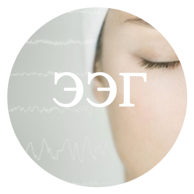
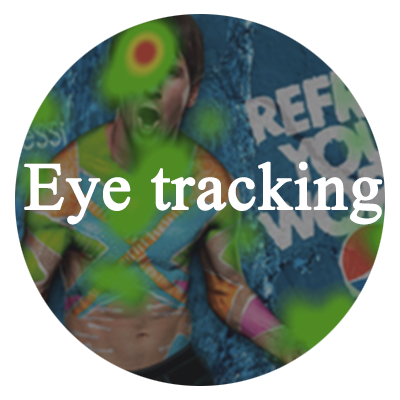

Методы нейромаркетинга
- 
Метод ЭЭГ (электроэцефалографии) позволяет выявить эмоции, которые вызывает дизайн, сайт, упаковка, реклама, видео реклама, аудиореклама, музыка, баннеры, раскладка в магазинах и другие объекты. Посление исследования показывают, что принятие решения о покупке товара происходит именно на подъеме положительных переживаний.
- 
Eye tracker может использоваться в любых исследованиях, связанных со зрительной системой - в usability тестировании, в маркетинговых исследованиях и в оценке эффективности печатной рекламы и дизайна. Сравнительный анализ позволяет выявить дизайн, который привлекает внимание человека, что очень важно при разработке рекламной продукции.
Исследования аудио
О графике:
если график на видео возростает, то эмоции положительная, если опускается - отрицательная.Чем сильнее колебания, тем сильнее эмоции.
Результаты исследования, где музыка имеет сильное эмоциональное влияние на слушателей.
Результаты исследования, где музыка не имеет сильного эмоционального влияния на слушателей.
Исследования видео
О графиках в видео:
1.Красный график указывает на моменты, где произошло запоминание.
2.Синий график указывает на изменения эмоций.
3.Точки не экране показывают перемещение взгляда.
Исследования игр, фото
О графиках в видео:
1.Синий график указывает на изменения эмоций.
2.Точки не экране показывают перемещение взгляда.